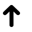

ภาพด้านล่างเป็นรูปร่างทั่วไป หน้าตาของจริงอาจแตกต่างกันได้
สิ่งนี้คือ "เมาส์" เวลากดปุ่มเราจะกดปุ่มฝั่งซ้าย หากบนเมาส์ไม่มีปุ่มอะไรเลย ให้พยายามกดเอียงมาทางซ้าย การควบคุมลูกศรบนหน้าจอทำได้โดยการขยับเมาส์
สิ่งนี้คือ "ทัชแพ็ด" เวลากดปุ่มเราจะกดปุ่มฝั่งซ้าย หากบนเมาส์ไม่มีปุ่มอะไรเลย ให้กดหรือแตะลงไปบนแผ่นเลย การควบคุมลูกศรบนหน้าจอทำได้โดยการเลื่อนนิ้วไปบนพื้นผิว